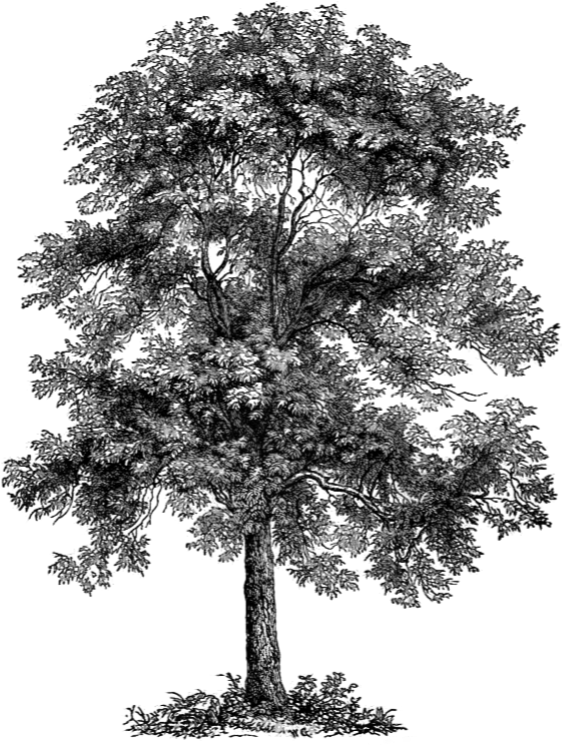
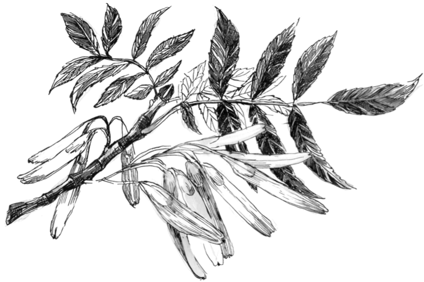

Какой сегодня чудесный день, не находишь? Самое время представиться! А дух не хотел меня к тебе отправлять, а зря — вон ты какой славный ребёнок. Ну что, знаешь ли ты обо мне хоть что-нибудь?
Вернуться назад →